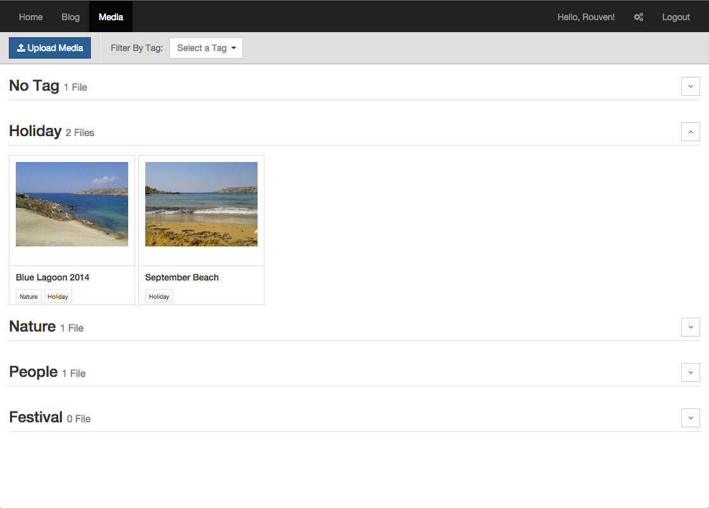
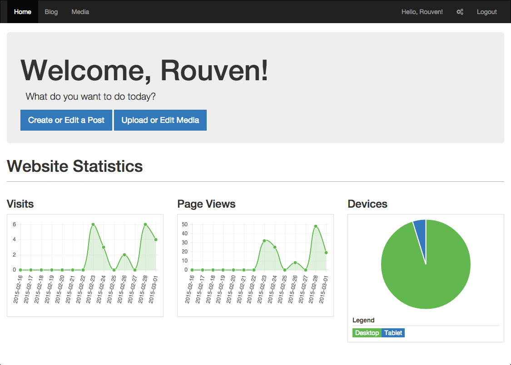
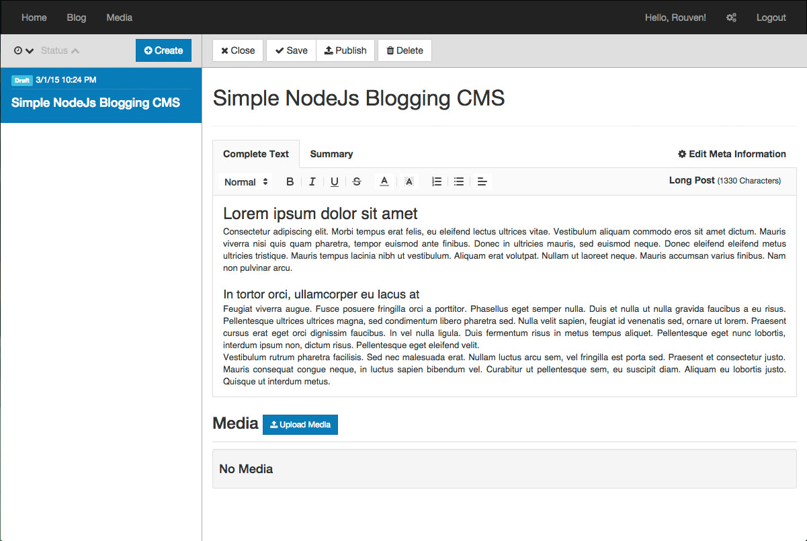

rouvenherzog
A Simple, Pluggable NodeJs Blogging and Gallery CMS

Just plug it into your existing Express.js app and you'll instantly have a backend available to create, update and delete Blog Entries and Images.
Just embed those into your website and you are done.